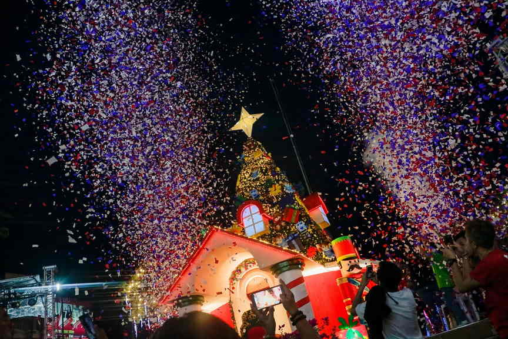

Davao City runs its Christmas season as a single citywide event called Pasko Fiesta sa Davao. It usually starts with a tree lighting in late November and keeps going until the last market stall packs up on 31 December. In between come parades, carnival rides, choir contests, dawn Masses and a lot of lights on public buildings, almost all of it free to watch.
For 2026, the city tourism office has already opened entries for two of its contests, and the rest of the calendar tends to follow a familiar order. This guide covers what has been announced so far, where the main Christmas attractions usually go up, and how to plan a December visit around the busiest nights.
One thing to know before booking: the full 2026 schedule comes out through the city government and the official Pasko Fiesta sa Davao Facebook page, usually in November. Treat the dates below from last season as a guide to the rhythm of the month, then match them against the new calendar once it is posted.

What's confirmed for Pasko Fiesta 2026
The City Tourism Operations Office (CTOO) is running Pasko Fiesta All Over the City 2026, a contest that asks businesses and barangays to turn their own spaces into Christmas stops. Hotels, restaurants, cafés, malls, resorts, banks, private schools and other establishments compete in one category, and the city's barangays in another. Expect lighting displays, Christmas villages, small markets, food and local products, and performances set up on business premises or inside barangay areas.
Registration runs until 30 November 2026. Pre-judging is set for 3 December, finalists are named on 5 December, and the judges make their on-site rounds from 6 to 12 December. For visitors, that second week of December is when the entries should look their sharpest, since everyone is trying to impress the people with clipboards.
The second contest is Koro sa Pasko, the city's Christmas choir competition. Entries close on 6 November, and groups compete as senior citizens, elementary and high school choirs, or in an open category for college, community and professional choirs. Each choir fields 18 to 25 singers. Watch the official page for the elimination and finals venues.
Where to see the Christmas lights
Rizal Park and City Hall
The downtown block around City Hall is the heart of Pasko Fiesta. In 2025 the season opened on 27 November at Rizal Park with "Dan-ag sa Davao ug Pag-Abli sa Pasko", the ceremonial lighting of a 30-foot tree, local performers and the release of a new Pasko Fiesta music video. City Hall itself gets dressed in lights, and on set nights the Panayegon sa City Hall program fills the grounds with Christmas music.
Rizal Park also hosts the Perya sa Pasko, a December carnival with rides and outdoor shows that ran from 1 to 25 December last year. It is the easiest stop for families, and the rides get busiest after dark on weekends.
Quezon Park and the neighbourhood parks
Quezon Park has long been one of the city's tree sites. The photo above comes from an earlier Pasko Fiesta opening there, when the season ran on a "Santa's Toy Factory" theme. In 2025 the park held a 30-foot tree dressed in Filipino-style designs to match the theme "Paskong Dabawenyo, Paskong Pilipino", built around the parol, the torotot and the nipa hut.
The celebration also spreads outward. In past seasons the city has scheduled music nights at Magsaysay, People's, Los Amigos and Doña Vicenta parks and along the Bago Aplaya esplanade, and last year it ran district celebrations in places such as Marilog, Los Amigos, Tibungco and Paquibato. With the 2026 barangay contest on top of that, the outer districts should have more to look at than usual.
The big nights to plan around
Parada sa Pasko
The Christmas parade, held together with the Banda Dasig marching band showcase, followed Roxas Avenue, C.M. Recto, Bonifacio and Iñigo streets to San Pedro Square on 7 December 2025, starting at 1 p.m. Roads along the route closed for the afternoon, and parking restrictions began from 8 a.m. If the 2026 parade follows a similar route, arrive early, come on foot, and pick a spot near San Pedro Square if you want to see the groups finish.
Siyam ka Kadlawon at San Pedro
From 16 to 24 December, the nine dawn Masses of Simbang Gabi draw crowds to San Pedro Square and San Pedro Cathedral. The city pairs them with Pamainit sa Pasko, a pre-dawn food strip on Bolton Street. Last year vendors could set up there between 1 a.m. and 7 a.m., so after Mass you can warm up with breakfast before the sun is fully up. On Christmas Day, the Misa Dabawenyo is held at the cathedral.
The year-end market
The season's last stretch moves to the coast. In 2025 the Merry Merkado ran from 26 to 31 December along Tulip Drive near the Times Beach rotonda, with food and goods from local sellers. Davao bans firecrackers and pyrotechnics, so New Year's Eve here is noticeably quieter than in most Philippine cities. Count on music, food and family gatherings rather than a sky full of fireworks.
Tips for a December trip to Davao
Before you go
Six things that make a December visit to Davao easier.
- Tip 01Book rooms early for the second half of DecemberOrganisers expected around 100,000 visitors for last year's Pasko Fiesta, and families from nearby provinces fill hotels in the days before Christmas.
- Tip 02Check road closures on event daysThe city posts closures for the parade and the dawn Mass food strip. Downtown traffic slows on these days, so walk or ride a taxi instead of driving into the centre.
- Tip 03Go on a weeknightRizal Park and Quezon Park are calmer from Monday to Thursday, and photos of the lights come out better with fewer heads in the frame.
- Tip 04Pack for rainDavao gets showers through the year, so an umbrella is worth carrying on evening walks between parks.
- Tip 05Leave the fireworks at homeThe ban applies to visitors too, including small firecrackers bought elsewhere.
- Tip 06Follow the official pageTimes, venues and any new events are posted on the Pasko Fiesta sa Davao Facebook page and the city government website.
Make it a longer Davao trip
Most Pasko Fiesta events happen in the evening, which leaves the days open. Take a boat across to Samal for a morning of caves and sandbars with our guide to Samal Island beyond the resorts, or head up to Malagos to see the country's national bird at the Philippine Eagle Center. If anyone in your group is worried about travelling in the south, read our area-by-area look at whether Mindanao is safe to travel before you book.
This page will be updated once the city releases the full Pasko Fiesta 2026 calendar, including the opening night, parade date and market venues.
Sources
Pasko Fiesta All Over the City 2026 application opens – City Government of Davao, 27 October 2026
CTOO releases guidelines for Koro sa Pasko Fiesta 2026 – SunStar Davao, 22 October 2026
Davao City Pasko Fiesta 2025 calendar released – SunStar Davao, 7 November 2025
Davao City Pasko Fiesta returns with lower budget – SunStar Davao, 22 November 2025
Davao City Pasko Fiesta road closures – SunStar Davao, 7 December 2025
Photo credit: City Government of Davao.


Comments
No comments yet. Been here recently? Share a tip or ask a question.
Leave a Reply